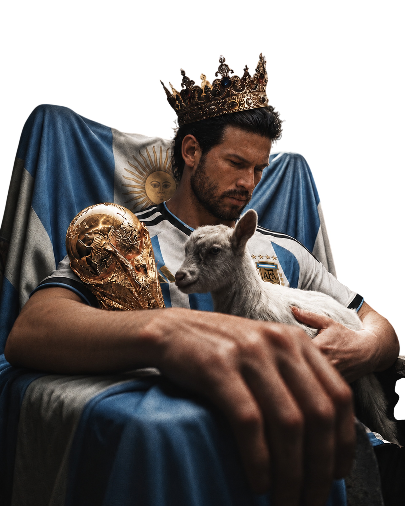
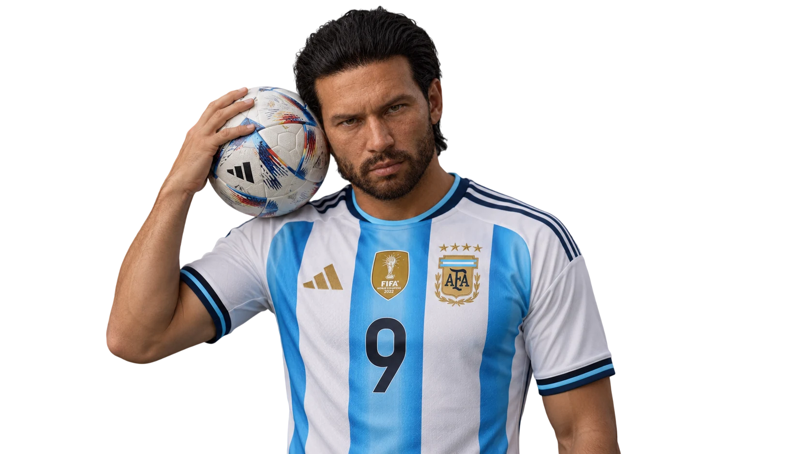
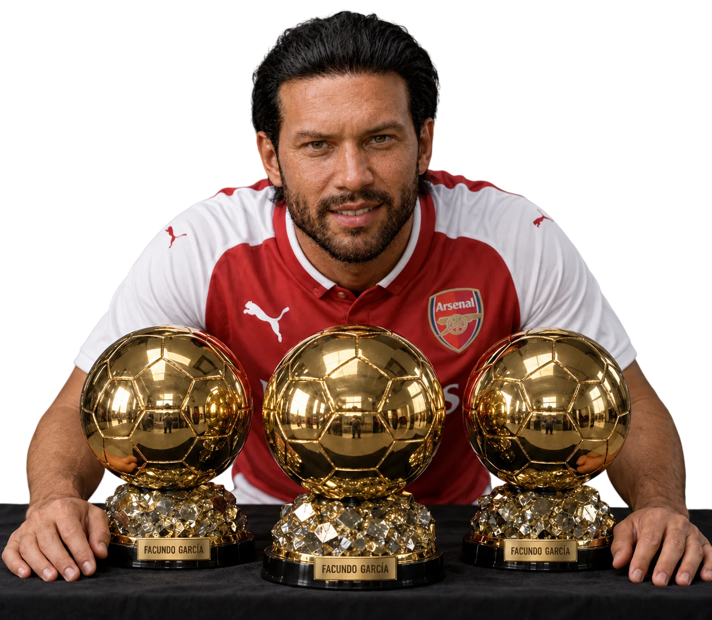
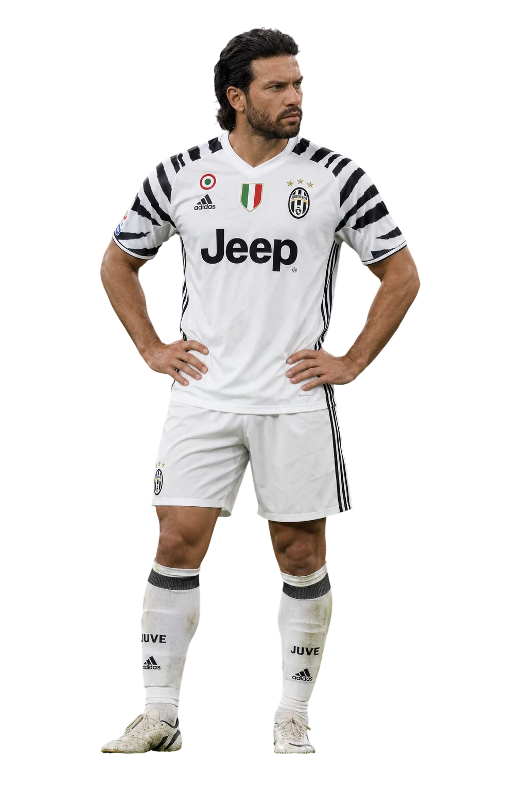
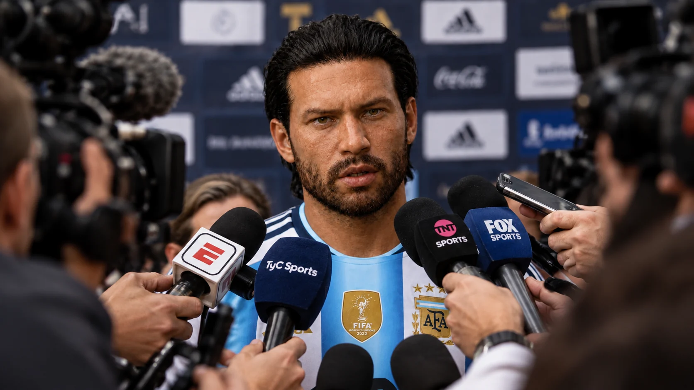
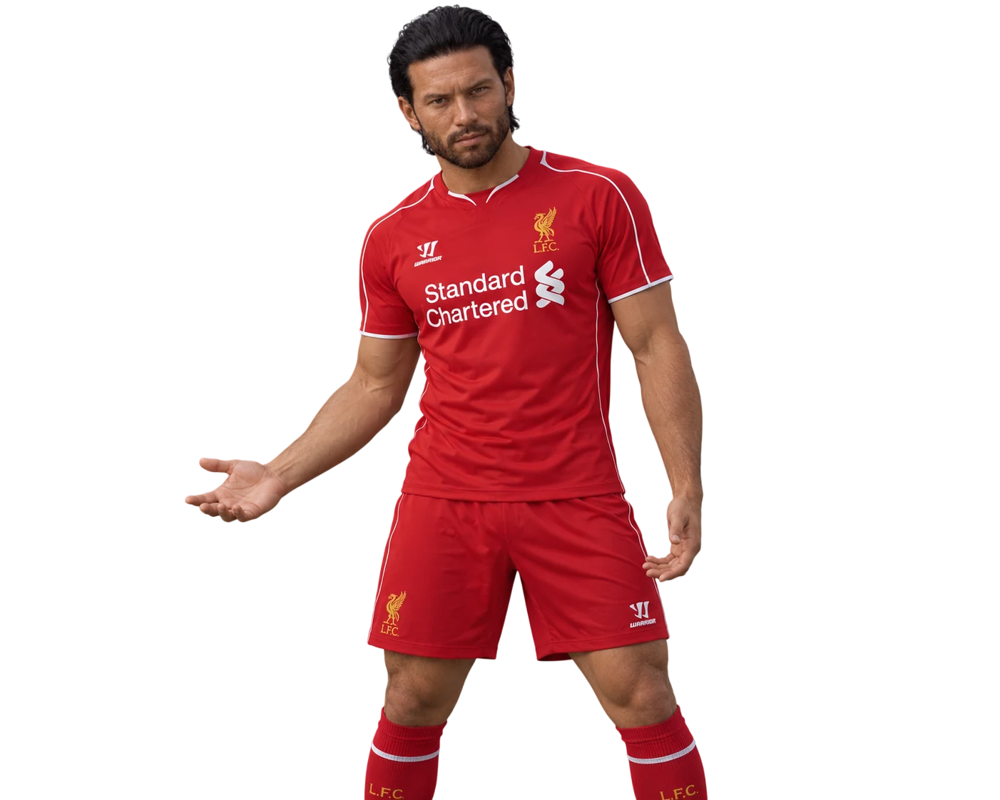
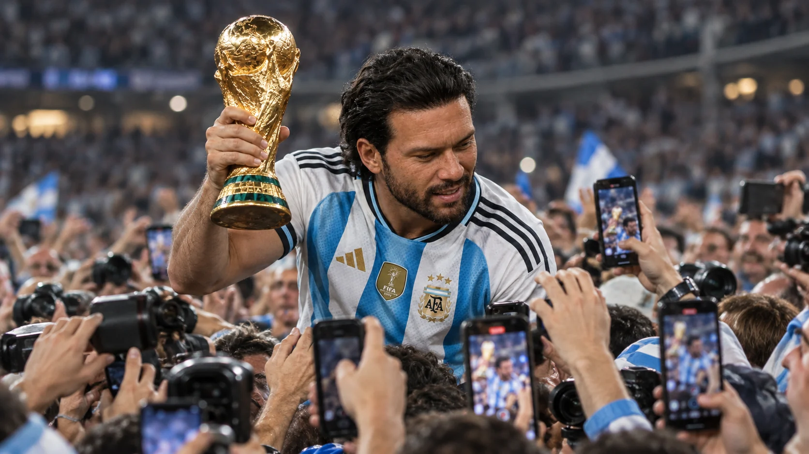

Факундо Гарсия
Статистика
Факундо Гарсия
MAT
710
GOALS
634
ASI
137
Наследие
Клубы


Клубные трофеи
26 клубных трофеев по перечисленным турнирам

4

1

4

4

5

6

2
Трофеи со сборной Аргентины

1

2
Личные награды

3

6

2

2

1
Игровые характеристики

Завершение атак
99634 гола за карьеру — главное свидетельство его эффективности. Гарсия опасен в штрафной, умеет завершать атаки в одно касание и использовать даже небольшое пространство для удара. Его главное качество — способность превращать созданный момент в результат.
Позиционирование
98Чувствует пространство между защитниками и выбирает момент для рывка. Правильное движение позволяет ему оказаться в нужной точке именно тогда, когда команда готова доставить мяч в штрафную.
Движение без мяча
98Создаёт угрозу ещё до получения передачи: меняет направление, открывается за спинами защитников и освобождает пространство для партнёров.
Футбольный интеллект
96Понимает, когда завершить атаку самому, а когда отдать передачу. 137 голевых передач показывают, что Гарсия не ограничивается ролью чистого завершителя.
Сила удара
96Обладает мощным и опасным ударом из разных положений. Точность и правильный выбор момента делают его опасным даже без возможности подготовить полноценный удар.
Скорость
94Использует ускорение для рывков за линию обороны и своевременного выхода на передачу. Скорость помогает создавать преимущество, но не является единственным основанием его стиля.
Техника
95Уверенно принимает мяч, быстро готовит удар и сохраняет контроль в ограниченном пространстве. Техника помогает ему завершать атаки и взаимодействовать с партнёрами.
Хладнокровие
98Сохраняет концентрацию в решающие моменты, умеет дождаться правильной позиции, выбрать угол удара и реализовать возможность под давлением.
 99
99
 98
98
 96
96 94
94 95
95 98
98
Класс · 98 LVL
Факундо Гарсия — центральный нападающий международного масштаба, один из самых результативных игроков своего поколения.
Игровой стиль
Complete Striker · Elite Finisher. Универсальный центральный нападающий с исключительным завершением атак. Гарсия сочетает движение без мяча, позиционное чутьё, технику и хладнокровие. Он может убежать за спины защитников, завершить комбинацию одним касанием или участвовать в розыгрыше как связующий игрок.
Биография
Факундо Гарсия — Бог, который не умел проигрывать
Аргентина · Центральный нападающий · 710 матчей · 634 гола · 137 голевых передач

Росарио — мальчик, которому никто ничего не обещал
Факундо Гарсия родился в Росарио, Аргентина, в обычной семье, далёкой от мира больших денег и футбольной роскоши. Его отец работал на заправках и злоупотреблял алкоголем. В детстве Факундо не рос в атмосфере, где каждое решение принималось ради будущей футбольной карьеры. У него была обычная школа, обычные улицы и местная спортивная школа, где он впервые начал всерьёз заниматься футболом. Он рос шумным, дерзким и самоуверенным мальчишкой. Любил внимание, мог вести себя вызывающе, часто хотел доказать окружающим, что он лучше их. В нём уже тогда было то сочетание, которое впоследствии сделает его великим и одновременно невыносимым: природный талант, огромное самолюбие и почти полное нежелание подчиняться чужим правилам.
Сначала футбол был для него способом выделиться, но постепенно стал единственным делом, в котором он чувствовал себя по-настоящему особенным. В местном клубе Росарио он прошёл детские команды, затем молодёжную систему. Тренеры быстро заметили его скорость, резкий дриблинг и способность завершать атаки из ситуаций, которые другие футболисты даже не считали голевыми. Факундо не просто обыгрывал соперников — он любил делать это демонстративно, словно хотел, чтобы защитник запомнил встречу с ним надолго. Он мог раздражать партнёров своей самоуверенностью, спорить с тренерами и вести себя так, будто уже был звездой. Но всякий раз, когда мяч оказывался у его ног, становилось трудно спорить с главным: у этого парня действительно был редкий дар.

«Ривер Плейт» — первый шаг к величию
В семнадцать лет Факундо забрал «Ривер Плейт». Для юного футболиста из Росарио это был огромный шаг: теперь перед ним находилась одна из самых известных футбольных школ Аргентины, а конкуренция стала серьёзнее, чем когда-либо. Гарсия не сразу превратился в главную звезду, но его способности было невозможно скрывать долго. Он обладал тем, чего нельзя полностью объяснить тренировками: инстинктом нападающего, умением мгновенно менять направление движения и чувством момента, когда защитник уже потерял равновесие. В семнадцать лет он всё ещё оставался трудным подростком, но на поле его недостатки часто отступали перед талантом.
Именно в «Ривер Плейт» началась история футболиста, которого впоследствии будут называть Богом. Однако ранний Гарсия ещё не был зрелым мастером. Он хотел быть главным, хотел, чтобы команда играла на него, и не всегда понимал, что великому игроку необходимо научиться существовать внутри коллектива. Он мог раздражаться, если партнёр не отдавал передачу, или демонстративно выражать недовольство после замены. При этом его результативность и индивидуальные действия заставляли тренеров терпеть характер, который далеко не каждый клуб согласился бы принять. Вскоре Факундо предстояло попасть в среду, где его талант получит европейскую сцену, а самолюбие встретится с футболистом, с которым его будут сравнивать всю оставшуюся карьеру.

«Арсенал» — рождение
В девятнадцать лет Гарсия перешёл в «Арсенал». Представители лондонского клуба заметили его во время клубного чемпионата мира и увидели не просто перспективного аргентинца, а игрока, способного изменить атакующую линию команды. В Лондоне он провёл три сезона. Это был важный этап: Факундо учился европейскому футболу, набирался опыта в больших матчах и постепенно превращался из яркого молодого таланта в звезду мирового масштаба. Он выиграл крупные трофеи вместе с командой, включая чемпионство и клубный мировой титул, а рядом с ним находился Эндрю Ван Хорн — ещё один футболист, которому было суждено стать символом целой эпохи.
Поначалу их сравнивали постоянно. Оба были невероятно опасны в атаке, оба могли решить матч в одиночку, но делали это по-разному. Гарсия был взрывом: скорость, резкость, дриблинг и удар, после которого вратарь часто оставался без шанса. Ван Хорн сочетал качества нападающего и правого вингера, умел создавать моменты и завершать атаки с холодной точностью. Вместе они были двумя тузами в одной команде — настолько сильными, что сравнение между ними казалось неизбежным. Но Факундо не хотел вечно оставаться частью великого дуэта. Он хотел, чтобы вся атака принадлежала ему, чтобы команда строилась вокруг него, чтобы никто не сомневался, кто главный. Со временем их пути разошлись, и оба превратились в самостоятельные футбольные величины. При этом Ван Хорн всегда относился к Гарсии с уважением: он понимал, что перед ним не просто партнёр по команде, а игрок, способный стать легендой независимо от того, кто находится рядом.

«Ювентус» — десять лет на вершине
В двадцать три года Гарсия оказался в «Ювентусе», где провёл примерно десятилетие — самый продолжительный и, вероятно, самый значимый клубный этап своей карьеры. Команду тренировал Сулейманов, и именно это сотрудничество стало важным не только для Факундо, но и для самого специалиста. Сулейманов умел видеть в футболистах качества, которые они сами не всегда понимали, однако Гарсия оказался особенным испытанием. Он был гениален, но капризен, талантлив, но склонен к конфликтам. Он мог решить важнейший матч, а затем устроить скандал из-за решения тренера. Его невозможно было воспитать одним только авторитетом. С ним требовалось работать, спорить, находить подход и принимать тот факт, что футболист такого масштаба никогда не станет удобным человеком.
В «Ювентусе» Гарсия достиг вершины клубного футбола. Он выиграл несколько чемпионских титулов Серии А, дважды поднимал над головой трофей Лиги чемпионов и получил «Золотой мяч» за один из лучших периодов своей карьеры. Его результативность стала пугающей: он мог забивать после сольного прохода, разрывать оборону на скорости, находить пространство в плотной защите и завершать атаки точным ударом. Но именно в Турине стало заметно, насколько сложно уживались в нём две личности. На поле он был почти неостановимым профессионалом, который требовал от себя совершенства. За пределами поля — человеком, который любил гулять, внимание и собственные удовольствия, нередко ставя личные желания выше дисциплины. Сулейманов пытался направить его энергию в нужное русло, и позднее признавался, что работа с Факундо изменила его самого как тренера. Гарсия научил его тому, что даже великий специалист не всегда формирует игрока — иногда именно игрок меняет своего наставника.

Сборная Аргентины — единственное, что было важнее его самого
Если клубный футбол был для Гарсии ареной личного величия, то сборная Аргентины означала для него нечто более глубокое. Национальная команда связывала его с родиной, с детством в Росарио и с людьми, которые видели в нём не просто дорогую звезду европейского футбола. В сборной его самолюбие приобретало другой смысл: он хотел не только быть главным, но и приносить стране победы. Он мог конфликтовать с тренерами, спорить с руководством клубов и игнорировать советы окружающих, однако национальная команда занимала в его жизни особое место. Единственным человеком, чьё мнение он действительно готов был выслушать без привычного сопротивления, был Лионель Месси. Факундо уважал его не только как великого футболиста, но и как человека, который понимал давление, ожидания и цену выступлений за Аргентину.
Гарсия дважды выиграл Кубок Америки, а на чемпионатах мира стал одним из самых заметных игроков своего поколения. Он дважды получал награду лучшему игроку мирового первенства и становился лучшим бомбардиром одного из турниров. Эти достижения закрепили его статус не просто клубной суперзвезды, а футболиста, способного определять судьбу сборной. Однако его история на чемпионатах мира не состояла из одних триумфов. Одним из самых болезненных эпизодов стал финал против Нидерландов. Аргентина подошла к решающему матчу с надеждой на победу, но Гарсия получил травму, которая лишила его возможности полноценно повлиять на игру. Ван Хорн забил два мяча, а Нидерланды выиграли чемпионат мира. Для Факундо это было особенно тяжело: в самом важном матче он столкнулся с соперником, которого уважал, но не смог ответить на поле так, как привык.
«Ривер Плейт» — возвращение Бога домой
После долгого и напряжённого периода в «Ювентусе» отношения Гарсии с клубом окончательно испортились. Конфликты, накопившиеся за годы, сделали продолжение сотрудничества невозможным. Факундо не собирался уступать в споре и не хотел оставаться там, где чувствовал, что его больше не понимают. В тридцать четыре года он вернулся в «Ривер Плейт» — клуб, который когда-то дал ему дорогу в большой футбол. Это возвращение было не просто трансфером. Для болельщиков он стал человеком, который прошёл Европу, выиграл крупнейшие клубные турниры и вернулся домой уже мировой легендой. В Аргентине его боготворили. На трибунах видели не капризную звезду, а своего мальчишку из Росарио, который добрался до вершины и теперь снова носил знакомую футболку.
Но возвращение домой не стало сказкой без последствий. За годы в Европе Гарсия привык к огромному вниманию и ощущению, что он может позволить себе почти всё. После тяжёлого чемпионата мира, конфликта с «Ювентусом» и накопившегося эмоционального напряжения он всё чаще искал отдых за пределами футбола. Ночные гулянки, привычка жить без строгих ограничений и нежелание прислушиваться к предупреждениям начали отражаться на его форме. Его талант никуда не исчез, но организм уже не мог бесконечно компенсировать отсутствие дисциплины. В «Ривер Плейт» его продолжали обожать, однако даже любовь болельщиков не могла защитить Факундо от последствий собственных решений. Впервые за долгие годы стало очевидно, что ему угрожает не соперник на поле, а он сам.
Падение — когда талант перестаёт спасать
Гарсия всегда жил так, будто последствия можно будет отложить на потом. Если он пропускал тренировку или позволял себе лишнее, то привык рассчитывать, что скорость, удар и природное чутьё помогут ему компенсировать упущенное. На протяжении многих лет эта уверенность оправдывалась. Он возвращался после спадов, решал матчи, забивал в финалах и заставлял критиков замолчать. Но к середине тридцатых лет цена такого образа жизни стала слишком высокой. Факундо всё чаще терял стабильность, а затем получил травму, которая стала ещё одним тяжёлым ударом по его карьере. Теперь ему пришлось столкнуться с тем, что не решается одним эффектным проходом: возрастом, восстановлением и необходимостью ежедневно выбирать между привычным удовольствием и профессиональной жизнью.
Для человека, который привык быть Богом на футбольном поле, это было почти унизительно. Гарсия не умел спокойно принимать собственные ограничения. Он раздражался, когда тело не подчинялось ему так, как прежде, и не любил слышать, что ему необходимо менять режим. Внешне он мог сохранять прежнюю самоуверенность, но за ней всё чаще скрывался страх: что если его лучшие годы действительно закончились? Что если мир, который привык ждать от него чуда, уже готов жить без него? Именно в этот период особенно ясно проявилась его главная слабость. Факундо мог изучить защитника, предугадать движение вратаря и найти единственный свободный метр в штрафной, но ему было гораздо труднее контролировать собственную жизнь за пределами поля.

«Ливерпуль» — последний большой вызов
За год до следующего крупного мирового турнира Гарсия наконец решил вернуть себя в форму. Это не было мгновенным преображением. Ему пришлось заново выстраивать режим, работать над физическим состоянием и принимать тот факт, что прежнего таланта теперь недостаточно. Он больше не мог полагаться только на природные данные. Чтобы снова стать опасным, ему требовалось вернуть дисциплину, которую он слишком долго считал необязательной. В этот период он отправился в «Ливерпуль» на правах аренды. Для клуба это был рискованный, но заманчивый шаг: команда переживала трудный период, и ей требовался футболист, способный взять на себя ответственность в решающие моменты.
Гарсия помог «Ливерпулю» выбраться из тяжёлого положения. Его зарплата оставалась высокой, ожидания — огромными, а возраст вызывал вопросы, но он снова доказал, что способен влиять на матчи на самом высоком уровне. В нём уже не было прежней лёгкости на каждом участке поля, однако опыт и чувство момента стали ещё важнее. Он умел выбирать, когда ускориться, когда обыграть защитника и когда завершить атаку без лишнего движения. С «Ливерпулем» он дошёл до финала клубного чемпионата мира, где встретился с «Арсеналом» и проиграл. Это поражение не перечеркнуло его вклад в сезон. Напротив, оно показало, что даже на позднем этапе карьеры Гарсия оставался игроком, вокруг которого могла строиться команда. Он не вернулся к прежнему бессмертию, но вновь стал тем человеком, которого соперники не могли позволить себе недооценивать.
Эндрю Ван Хорн — соперник, которого он признавал
Сравнение с Эндрю Ван Хорном сопровождало Гарсию почти всю карьеру. В «Арсенале» они начинали как партнёры, две главные атакующие силы команды. Затем их пути разошлись, и каждый стал самостоятельной звездой. Болельщики спорили, кто из них сильнее, кто важнее для своей команды и кто заслуживает большего исторического признания. Гарсия не любил, когда его ставили в один ряд с другими футболистами, но Ван Хорн был исключением. Он видел в нём игрока, достойного внимания и уважения. Не обязательно друга, не обязательно человека, с которым он соглашался во всём, но равного по масштабу соперника.
К другим футболистам Факундо часто относился гораздо пренебрежительнее. Например, Луиса Чато он долгое время не воспринимал всерьёз, считая его игроком меньшего масштаба и не видя в нём равного себе соперника. Гарсия мог быть безразличным к чужим успехам, пока не считал человека достойным внимания. Ван Хорн же заслужил это признание своим уровнем, самостоятельностью и способностью выигрывать большие матчи. Их отношения были особенными: они могли находиться по разные стороны финала, бороться за титулы и сравниваться журналистами, но оба понимали, что принадлежат к одному поколению великих атакующих игроков. Гарсия не нуждался в том, чтобы публично признавать превосходство Ван Хорна. Сам факт того, что он воспринимал его всерьёз, уже говорил о многом.
Испания — страна, которая хотела видеть его своим
Особую страницу карьеры Гарсии составили матчи против испанских клубов. Его стиль идеально подходил для того, чтобы причинять боль командам, которые любили контролировать мяч и высоко располагать оборону. Скорость Факундо позволяла ему атаковать пространство за защитниками, дриблинг — разрушать персональную опеку, а точный удар — превращать даже небольшой шанс в гол. Встречи с испанскими грандами нередко становились для него личным спектаклем. Особенно принципиальными были матчи против «Реала»: Гарсия не просто стремился победить, он любил демонстрировать своё превосходство, праздновать голы с вызывающей уверенностью и напоминать соперникам, что они не способны его остановить.
Со временем его выступления против испанских клубов привлекли внимание болельщиков и прессы Ла Лиги. Многие хотели увидеть Гарсию в испанском чемпионате на постоянной основе. Его техника, дриблинг и способность создавать моменты из ничего казались идеальными для лиги, где ценились работа с мячом и индивидуальное мастерство. Но Факундо никогда не был человеком, который выбирает клуб только потому, что его туда зовут. Он принимал решения исходя из собственных амбиций, отношений с руководством и желания оставаться главным. Возможно, именно поэтому Ла Лига так и не получила полноценную эпоху Гарсии в своём чемпионате. Испанские клубы знали его как противника, который регулярно портил им большие вечера, и эта репутация была не менее громкой, чем репутация футболиста, который мог бы стать их главной звездой.
Сулейманов — тренер, которого изменил игрок
Влияние Гарсии на Сулейманова стало одной из самых необычных историй его поздней карьеры. Когда они работали вместе в «Ювентусе», тренер уже обладал собственными принципами, опытом и пониманием футбола. Но Факундо оказался не тем игроком, которого можно было просто вписать в готовую систему. Он заставлял Сулейманова пересматривать собственные методы, искать новые способы мотивации и понимать, что талантливый футболист может требовать не меньше внимания, чем вся команда. Работа с Гарсией показала ему, что строгость не всегда означает контроль, а доверие не обязательно означает слабость. Чтобы раскрыть такого игрока, тренеру нужно знать не только его сильные стороны, но и внутренние противоречия.
Позднее Сулейманов говорил, что Факундо повлиял на него и сделал тем специалистом, которого люди запомнили. В этом признании есть параллель с известной мыслью Пепа Гвардиолы о том, насколько важным для его карьеры был Лионель Месси: великий игрок способен изменить не только результаты команды, но и представления тренера о самом футболе. Гарсия не сделал Сулейманова успешным в одиночку, но стал одним из тех футболистов, через которых тренер глубже понял психологию профессии. Факундо мог быть капризным, трудным и даже разрушительным для собственного успеха, однако именно работа с ним помогла Сулейманову стать более гибким и внимательным к человеческой стороне футбола.
Характер Бога
Прозвище «Бог» возникло не только из-за количества голов. Оно отражало отношение к Гарсии со стороны болельщиков и соперников. На поле он часто выглядел так, будто обычные ограничения к нему не относятся: он мог обыграть нескольких защитников, забить из невозможного положения или решить финал одним движением. Его скорость и дриблинг делали его почти неуловимым, а точный удар превращал малейшую ошибку обороны в наказание. Но за образом сверхчеловека скрывался человек с очень земными слабостями. Он любил внимание, был самоуверенным, капризным и склонным к загулам. Он мог требовать от партнёров идеального исполнения, не всегда предъявляя те же требования к себе за пределами поля.
В Гарсии всегда существовало противоречие между тем, кем он был на поле, и тем, кем становился вне его. В футболе он мог часами совершенствовать отдельное движение, искать решение против конкретного защитника и сохранять невероятную концентрацию в финале. В обычной жизни ему было трудно придерживаться той же дисциплины. Он не любил, когда ему указывали, как жить, и иногда воспринимал заботу как попытку ограничить свободу. Именно поэтому его карьера была такой яркой и такой сложной. Факундо не был идеальным профессионалом, но обладал талантом, который позволял ему подниматься выше собственных недостатков снова и снова. Его величие никогда не заключалось в безупречности. Оно заключалось в том, насколько далеко он мог зайти, даже будучи человеком, который не всегда умел управлять самим собой.
Цифры, которые остались после эпохи
За карьеру Факундо Гарсия провёл 710 матчей, забил 634 гола и отдал 137 голевых передач. Это 771 результативное действие — в среднем более одного гола или ассиста за игру. Он выиграл два «Золотых мяча», дважды признавался лучшим игроком чемпионата мира, становился лучшим бомбардиром мирового первенства, выиграл две Лиги чемпионов и шесть или семь чемпионских титулов Серии А, а также дважды поднимал Кубок Америки над головой. Эти достижения охватывают разные этапы его жизни: молодость в «Арсенале», пик в «Ювентусе», возвращение в «Ривер Плейт» и поздний вызов в «Ливерпуле».
Однако статистика не может полностью объяснить, почему Гарсию считали Богом. Цифры показывают результат, но не передают ощущение, которое возникало, когда он получал мяч на скорости и защитники начинали отступать. Они не объясняют его вызывающие празднования против «Реала», соперничество с Ван Хорном, преданность сборной Аргентины или то, как он повлиял на Сулейманова. Не рассказывают они и о потерянных возможностях — о конфликтах, гулянках, травмах и решениях, которые могли сделать его карьеру ещё более выдающейся. Гарсия был не только коллекцией рекордов. Он был человеком, вокруг которого постоянно возникали споры, ожидания и истории, потому что люди чувствовали: рядом с ним происходит нечто большее, чем обычная футбольная карьера.

Наследие — Бог, который оставался человеком
Факундо Гарсия вошёл в историю не как идеальный спортсмен, а как один из самых ярких и противоречивых футболистов своей эпохи. Он пришёл из обычной семьи в Росарио, прошёл путь через «Ривер Плейт», «Арсенал» и «Ювентус», стал мировой звездой, пережил конфликт с клубом, вернулся домой, потерял форму и снова нашёл силы подняться. Он забивал в крупнейших матчах, выигрывал трофеи, проигрывал финалы, получал награды и сталкивался с последствиями собственных слабостей. Его история не была прямой линией от таланта к величию. Это был путь человека, который много раз подходил к собственной вершине, а затем сам же ставил её под угрозу.
Его будут помнить как нападающего, способного решить матч в одиночку, как соперника, которого уважал Ван Хорн, как игрока, изменившего взгляды Сулейманова, и как человека, для которого Аргентина значила больше, чем любые клубные цвета. Его прозвище было «Бог», но, возможно, именно человеческие слабости делают эту историю особенной. Он мог быть невыносимым, самовлюблённым и безрассудным, но когда выходил на поле, всё это отступало перед его талантом. Он не всегда умел победить самого себя. Зато он снова и снова заставлял футбольный мир поверить, что на газоне для него не существует невозможного.
Ван Хорн стал одним из тех, с кем Гарсию сравнивали. Сулейманов стал одним из тех, кого Гарсия изменил. Аргентина стала той страной, ради которой он был готов отдать всё. А футбол запомнил его как Бога, который мог обыграть весь мир — но не всегда мог справиться с самим собой.
Фотографии